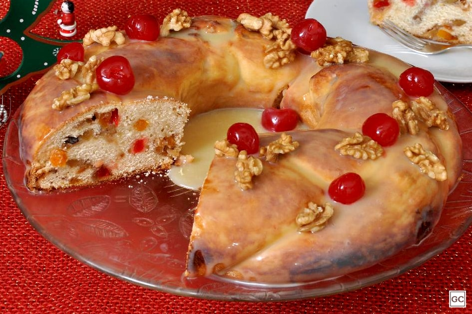

Doces · Tortas e bolos
Rosca de Natal

Ingredientes
- 1 caixa (400 g) de mistura para salgados
- ⅓ xícara de leite
- 3 ovos
- ¼ xícara de manteiga
- ½ xícara de açúcar cristal
- ¼ xícara de mel
- 1 colher (chá) de canela em pó
- 1½ xícara de nozes picadas
- 2 colheres (chá) de suco de limão
- 2 xícaras de passas brancas e frutas cristalizadas picadas em ⅔ xícara de Cointreau
- 1 gema batida
Modo de preparo
- Misture a massa para salgados com ⅓ xícara de leite e 2 ovos.
- Prepare o recheio: ferva manteiga, açúcar, ¼ xícara de leite, mel e canela; junte nozes, ovo batido e limão.
- Abra a massa em retângulo (37 × 54 cm), espalhe recheio, passas e frutas. Enrole, pincele com gema.
- Forme rosca em assadeira untada, corte fatias até dois dedos do centro e incline cada fatia.
- Cubra com alumínio untado e deixe crescer 20 min. Asse 200 °C 15 min, depois 180 °C 10 min. Esfrie e congele.
Observação
Descongelamento: ~2 h; glacê com 1 xícara de açúcar de confeiteiro e 1½ colheres (sopa) de limão. Massa crua não deve ser recongelada.